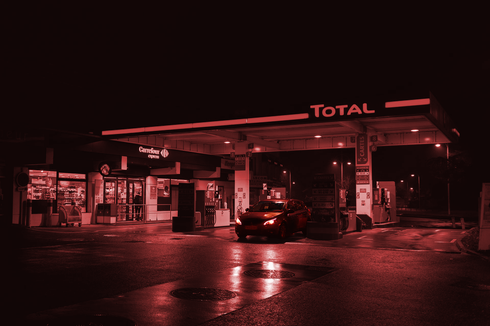
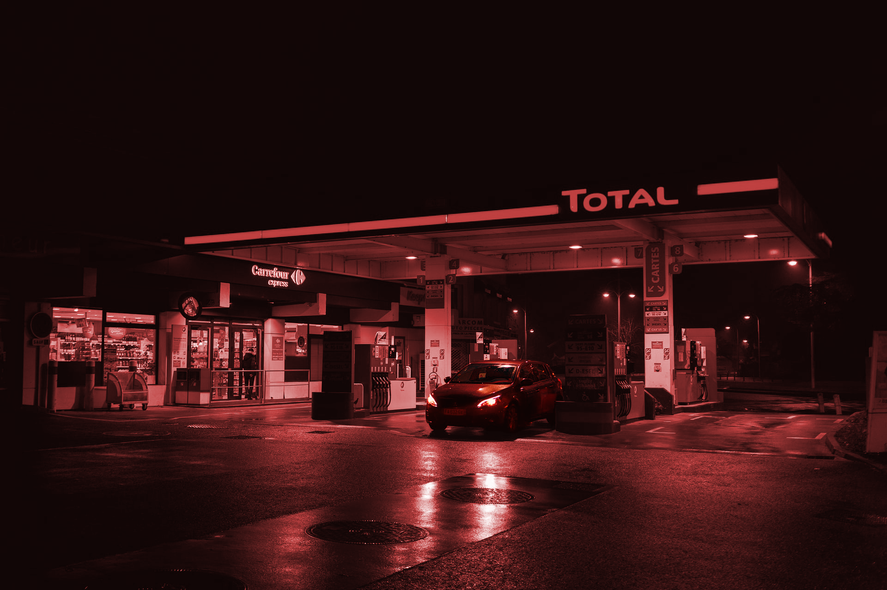

恐怖故事分享由來
由於過去到現在，這麼長時間以來發生了許多不可思議的事件，小時候常常不經意地就會看到別人看不到的好兄弟，他們要是知道你看的到他們有可能會纏著你， 當時常常晚上遇到一些超自然現象，而且年紀小不懂事的時候，都會玩錢仙、筆仙因為我們覺得那個他很厲害知道好多我們不知道的事，但是我們當時互相猜忌認為是朋友惡作劇， 在那之後因為親人過世後還有看到出現在家中，當時我並不害怕還想深入了解，所以我對這方面又好奇又很感興趣，也想分享更多故事給靈異愛好者。

由於過去到現在，這麼長時間以來發生了許多不可思議的事件，小時候常常不經意地就會看到別人看不到的好兄弟，他們要是知道你看的到他們有可能會纏著你， 當時常常晚上遇到一些超自然現象，而且年紀小不懂事的時候，都會玩錢仙、筆仙因為我們覺得那個他很厲害知道好多我們不知道的事，但是我們當時互相猜忌認為是朋友惡作劇， 在那之後因為親人過世後還有看到出現在家中，當時我並不害怕還想深入了解，所以我對這方面又好奇又很感興趣，也想分享更多故事給靈異愛好者。
 

最近剛剛聽說了一件怪事，就在前幾天一個加油站的女加油員，晚上突然死亡了。根據調查是被嚇死的 前些天的一個晚上女加油員還想往常一樣坐在小板凳上玩著新買的手機，想著明天和自己的男朋友上哪裡玩去。就在這時。點燈光把個黑夜劃破了，遠處行駛來了一輛拉大卡車，慢慢的在加油機邊上停下來了。這時那個加油員心裡憤憤的，心想“這好容易給自己的男朋友發個簡訊吧，還來個車加油，真是沒天理了”。可是沒辦法啊，先做好自己的工作再說吧。加油員從椅子上站了起來走到了加油機旁邊。 車門打開了，從車上走下來一個上身穿祿衣服，下身穿黑褲子的年輕男人，加油員好奇就往車廂裡看了看上面還坐著個女的，大紅的衣服，在黑夜裡顯得是那麼的妖艷。加油員心裡還想呢，真是林子大了什麼鳥都有啊，這種打扮還趕趕時髦，就是粉塗的太多了，刷白刷白的，怎麼看怎麼別扭。加油員也是個神經比較大的人也沒多想。就問了，“帥哥，加多少油啊”。一邊說著還拋了個媚眼。就聽見這個男的用一種及其別扭的聲音說，加滿。聽他說完話。加油員起了一身雞皮疙瘩，心說，虧了沒在古代，要是在古代這個哥們肯定是當太監的痞子，也太像了，真是世界無邊大啊，什麼事都可能啊。還白白浪費了自己這個媚眼啊。心裡這麼感嘆著，打開油箱蓋，拿起加油槍，哼著時下最流行的小曲，開始加油了。 加了沒一會就滿了，加油員看看計價器，扭過頭對著那個男的說“帥哥，一共是1千9百50員整。”那個男的，從祿褂子裡摸索了一下，掏出一沓錢來，全都是一百的。那個男的拿出20張來給了加油員，加油員把錢拿過來，無意中看到那個男的手也是刷白刷白的，心裡就咯噔了一下，但是就是覺得不對勁，反正就是說不出來。“帥哥，你等會我給你找錢去哈。”說著就跑到財務室，把錢給了經理，等著經理找錢。經理拿過錢，臉刷一下就變白了。加油員一看，笑著說：經理你的臉怎麼也白了啊。經理吧錢舉起來“你看看這是錢嗎”。加油員湊過去一看可不嘛，這哪裡是錢啊，這不都是冥紙嗎。當時加油員就傻了。經理說趕緊追，這不是騙人呢嗎。快點快點。經理和加油員都追了出來，一看外邊什麼人都沒有，冷冷清清的，天還是那麼黑。經理提鼻子一聞，怎麼這麼大的汽油味啊。低頭一看，地上有一地的汽油。經理這時更火了，就指著加油員“你就是會玩手機看看你干的好事”。加油員這時也張耳摸不著頭腦了啊。經理趕緊去把監控提了出來，一看，嚇得都說不出來話了。加油員上前一看，原來剛才加油的車是一輛紙胡的汽車，下來給錢的也是個紙胡的人，當加完了油，那個紙胡的紙人，衝著監控擺了擺手，上了紙胡的汽車，在看紙車上面寫著幾個血紅血紅的大字，“陰間施工車”。車就這樣慢慢的消失在了無邊的黑夜當中了。女加油員當場嚇暈過去了，馬上送到醫院進行搶救，經過搶救無效死亡，在死亡的一剎那，女加油員突然用太監的聲音說了一句，光看不轉，到大黴。轉了以後三天就一筆極大的財富。我也沒辦法！！